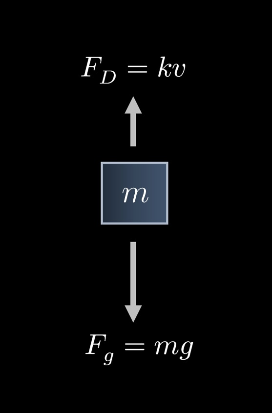

FIGURE FOR PROBLEM \(34\)
A freefalling object will accelerate until it reaches a terminal velocity—the maximum speed at which the object can fall.
A drag force, which can be modeled by \(\displaystyle F_D = kv\), where \(k\) is the object's drag coefficient and \(v\) is the object's velocity,
acts on the object as it falls.
The force due to gravity is given by \(F_g = mg\),
where \(m\) is the object's mass and \(g\) is the constant of gravitational acceleration, \(9.8 \text{m}/\textrm{s}^2\) on Earth.
Newton's Second Law gives the equation \(\displaystyle mg - kv = m \frac{\textrm{d}v}{\textrm{d}t} \).
Performing separation of variables, an equation that can be used to solve for \(v_T\), the terminal velocity of the object,
is \(\displaystyle \int_0^{v_T} \frac{1}{g - \frac{k}{m}v} \, \textrm{d} v = \int_0^\infty \textrm{d} t \).
Show that \(\displaystyle v_T = \frac{mg}{k}\).
(Hint: \(m\), \(k\), and \(g\) are constants.)
Integrating, we obtain
$$ - \frac{m}{k} \left(\ln\left| g - \frac{kv_T}{m} \right| - \ln(g) \right) = t \Big]_0^\infty $$
$$ \ln\left| 1 - \frac{kv_T}{mg} \right| = -\frac{k}{m} t \Big]_0^\infty $$
$$ 1 - \frac{kv_T}{mg} = e^{-kt/m} \Big]_0^\infty $$
$$ v_T = \frac{mg}{k} \left(1 - e^{-kt/m} \right) \Big]_0^\infty $$
$$ v_T = \frac{mg}{k} \Big[1 - \Big( \underbrace{\lim_{t \to \infty} e^{-kt/m}}_0 - e^0 \Big) \Big] $$
$$ = \frac{mg}{k}. $$